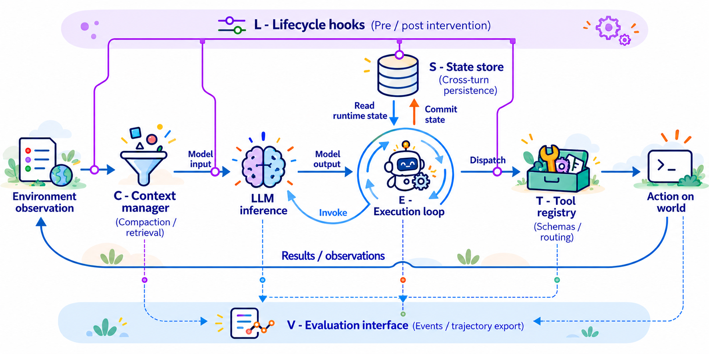
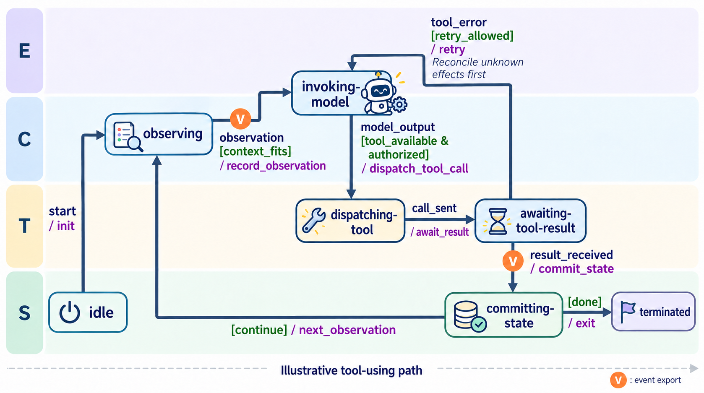
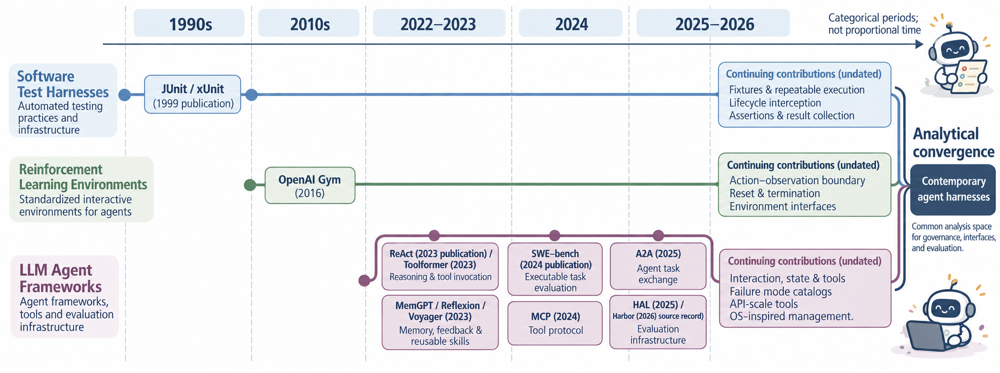
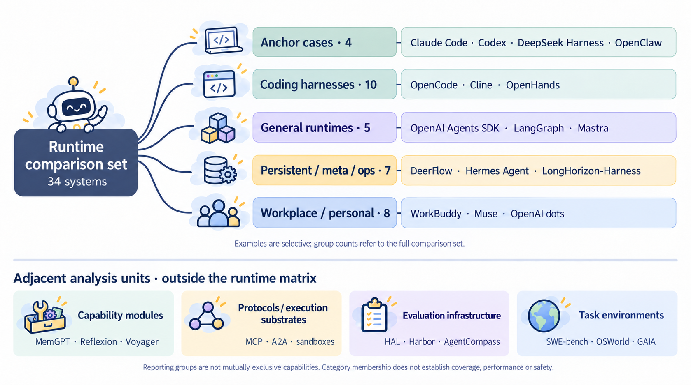
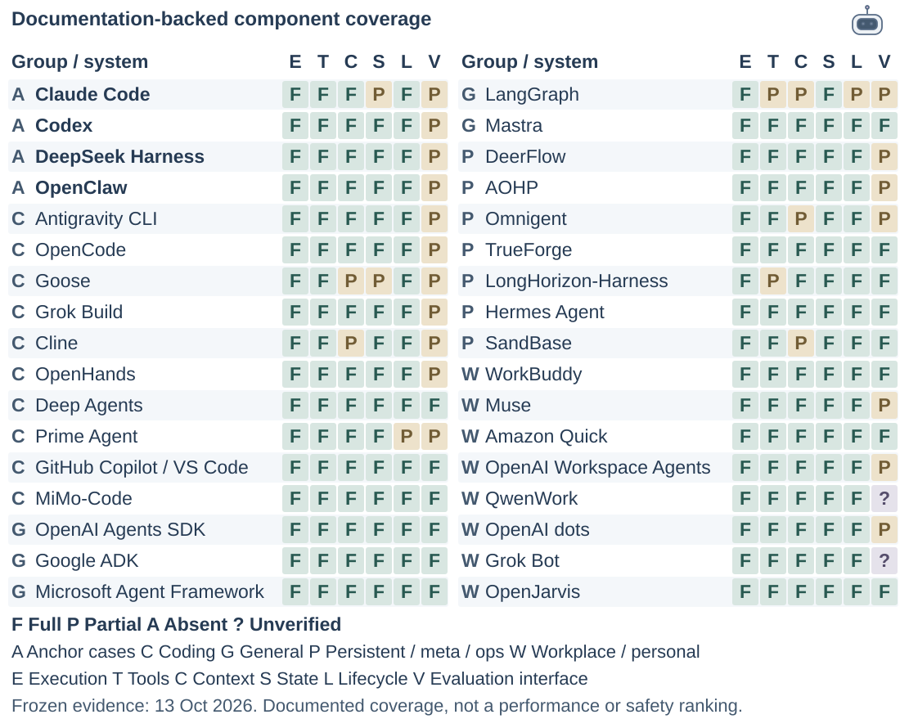
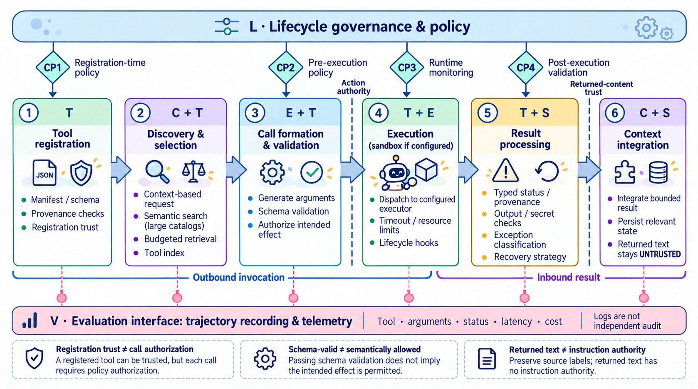
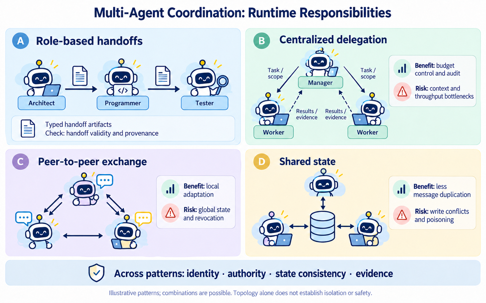
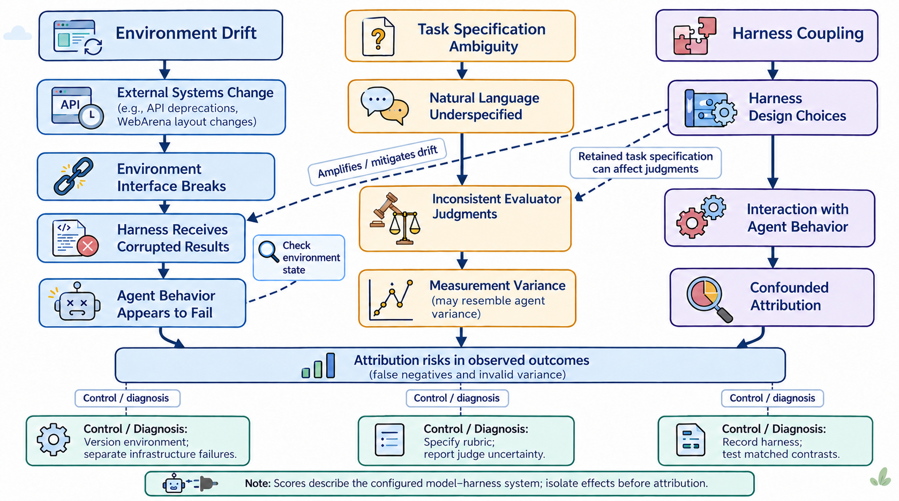
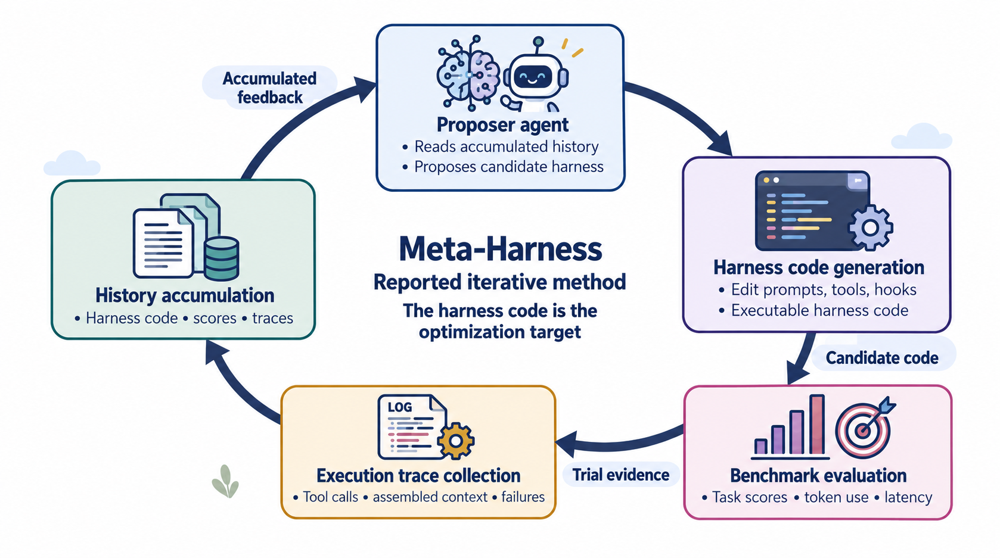

A survey of agent runtimes · 2026
Agent Harness for Large Language Model Agents: A Survey
Minzu University of China · Dalian University of Technology · Xiaohongshu Inc. · University of Science and Technology of China
Agent capability should be analyzed at the model–harness–environment configuration level. The harness is a consequential and frequently under-reported co-determinant of observed behavior.

The paper
A runtime layer made visible
The survey brings together first-party system evidence, controlled harness evaluations, and lifecycle studies to examine how the model, harness, and environment shape observed capability.
Explore the living evidence indexAnalytical framework
Six functions. One runtime.
ETCSLV organizes six recurring runtime responsibilities and their interactions: execution, tools, context, state, lifecycle controls, and evaluation.

Historical evolution
Where runtime responsibilities come from

System landscape
Evidence-coded system comparison
Thirty-four systems assessed against the same six functions. The matrix cutoff is 2026-10-12; per-source access dates are shown in the evidence details. Ratings do not measure quality, adoption, or production maturity.
Four architectures, four design questions
- Claude Code
- Claude Code integrates repository exploration, editing, commands, and delegated work into a coding workflow. It shows how context selection and action approval shape the path from a user goal to a tested artifact.
- Codex
- Codex connects model and tool events through an execution loop, persisted rollouts, and approval and sandbox controls. It makes the relationship between execution, recoverable state, and client interfaces central to architecture analysis.
- DeepSeek Harness
- DeepSeek Harness exposes runtime components through plugins, profiles, and patches. Typed tools, session events, and replaceable services make it a case for studying component boundaries and controlled runtime modification.
- OpenClaw
- OpenClaw coordinates messaging channels, persistent sessions, and scheduled work through a gateway. It extends the comparison to agents whose identity, state, and authority remain relevant across interactions and over time.

View the full component-coverage figure

| System | E | T | C | S | L | V | Evidence |
|---|
The comparison set is evidence-driven, not a ranking. Expand a row to inspect first-party sources, version identifiers, confidence, and access date for each component.
Cross-cutting engineering
Tools and collaboration carry runtime obligations
Tool governance across the execution loop

Coordination patterns and responsibility boundaries

Evaluation landscape
Six areas of harness evaluation
Six research questions organize the evaluation literature, connecting benchmark suites, evaluation methods, and the infrastructure needed to run them.

Task environments such as OSWorld, WebArena, GAIA, and SWE-bench remain essential. They measure configured-system task performance; a harness-effect study adds controls that isolate runtime changes.
Literature update
Selected research updates
Seven studies added on 18 October 2026 cover benchmarks, methods, implementation testing, and security.
Harness evolution
How harnesses change through experience
Harness evolution operates on different objects: reusable skills, executable runtime code, or the model and runtime together. The survey compares what changes, which feedback guides the change, and how improvements are evaluated.
| Work | Object of change | Role in the comparison |
|---|---|---|
| SkillOpt | Reusable skill text | How can rollout feedback guide persistent skill edits? |
| Meta-Harness | Executable harness code | How can traces and task scores guide runtime implementation search? |
| AutoHarness | Task-specific harness and policy code | How can environment feedback guide action-validating code? |
| EvoHarnessBench | Changing tools, skills, and agent configurations | How are adaptation and retention measured across stages? |
| TaoLive | Model weights and runtime components | How does model training interact with a changing harness? |
Inspect the Meta-Harness code-optimization loop

Research agenda
From component coverage to testable effects
The research agenda moves from documenting components to testing how their interactions shape task performance, state continuity, authority, and adaptation.
Citation
Paper versions and citation
The repository PDF is v4; the DOI points to archived v3; v5 is in revision.
Open DOI record@article{meng2026agentharness,
title = {Agent Harness for Large Language Model Agents: A Survey},
author = {Meng, Qianyu and Wang, Yanan and Chen, Liyi and Wu, Wei and
Li, Yihang and Jiang, Wenyuan and Wang, Qimeng and
Lu, Chengqiang and Gao, Yan and Wu, Yi and Hu, Yao},
year = {2026},
doi = {10.20944/preprints202604.0428.v3},
url = {https://www.preprints.org/manuscript/202604.0428/v3},
publisher = {Preprints}
}